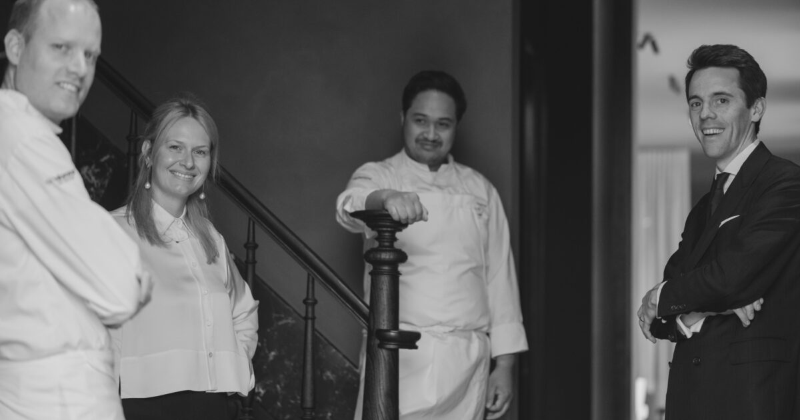
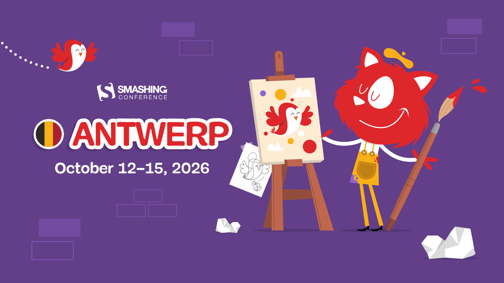

· Tongerlo · Westerlo · Antwerp Province ·
Belgium
2026
A conference calendar centred on a Saturday-evening table at Maison Colette, 2 ★, Tongerlo — with everything reachable inside a 47 km bubble plotted month by month.

★ The anchor
Inside the 30 km ring — Leuven, Mechelen
Antwerp 35–47 km — ≤50 min by car
Recurring meetup
M.C Trip anchor
19 sources · ~4 min read · survey
Month One · Trip Window
May — the trip month.
Two big-name conferences ladder up to the Saturday dinner. Techorama on May 11–13 is the tack-on candidate for .NET / Azure folks; the Leuven academic conferences fall inside the 30 km bubble.
May '26
5 events · 2 inside 30 km · 2 Antwerp · 1 past
Trip Saturdays · May 23 · May 30
Trip Saturdays · May 23 · May 30
Mon
Tue
Wed
Thu
Fri
Sat
Sun
1
2
3
25
26
27
28
29
30
M.C
Dinner — 2 ★
31
Reading. Neither Saturday May 23 nor May 30 collides with a conference — the Belgian rhythm is Tue–Fri. The closest tack-on is Techorama the week before, or the Wednesday-evening Data Science Leuven meetup if arriving early. Aggregate cross-checked against the dev.events Antwerp calendar[17].
June '26
4 events · 1 inside 30 km · 3 Antwerp
Heaviest week of 2026 · Jun 8–12
Heaviest week of 2026 · Jun 8–12
Mon
Tue
Wed
Thu
Fri
Sat
Sun
1
2
3
4
5
6
7
8
9
10
11
12
13
14
DDD Europe 2026 — Domain-Driven Design · workshops + conf
Data Mesh Live — co-located with DDD
BC TechDays — MS Dynamics Business Central
15
16
17
18
19
20
21
29
30
If the trip stretches. The Jun 8–12 week stacks DDD Europe, Data Mesh Live and BC TechDays inside the same 45-minute drive — three world-class conferences in one Antwerp week.
Autumn Stretch · Conference Season
October — Devoxx fortnight.
Two back-to-back Antwerp weeks: Devoxx Belgium takes the first, SmashingConf takes the second. Both sell out — book early.

October '26
2 events · both Antwerp
Two consecutive weeks · Oct 5–9 & Oct 12–15
Two consecutive weeks · Oct 5–9 & Oct 12–15
Mon
Tue
Wed
Thu
Fri
Sat
Sun
1
2
3
4
19
20
21
22
23
24
25
26
27
28
29
30
31
Travel tip. Both Kinepolis (Devoxx) and The Bourla (SmashingConf) ask different commute choices: Kinepolis-North is a car venue on the ring road; The Bourla sits in central Antwerp — train to Antwerpen-Centraal is the better call [19].
November '26
1 event · Antwerp
Year's closing event · Nov 4–5
Year's closing event · Nov 4–5
Mon
Tue
Wed
Thu
Fri
Sat
Sun
1
9
10
11
12
13
14
15
Last call. AutomationSTAR is the only Antwerp tech event after October — after Nov 5 the Belgian conference circuit is effectively done until the following spring.
Recurring meetups — every month, no plotting needed
— · Inside the 30 km ring · evening events · low commitment ·
Monthly · ~3 speakers
Data Science Leuven
Arenberginstituut STUK · Naamsestraat 96, Leuven · Volunteer-run, no sponsors [14]
⏱ ~28 km / 30 min
Quarterly-ish
Data Mesh Belgium
AE office, Leuven · rotates within Belgium · meetup #7 was Apr 21, 2026 [15]
⏱ ~28 km / 30 min
Monthly · free
Ixor Tech Talks Mechelen
Ixor · Schuttersvest 75, 2800 Mechelen · software-development topics [16]
⏱ ~30 km / 35 min
The closer towns inside the strict 30 km radius — Geel (~10 km), Herentals (~15 km), Aarschot (~15 km), Lier (~25 km), Turnhout (~27 km) — don't host recurring developer meetups of note as of May 2026. Kempen tech professionals travel to Mechelen, Leuven or Antwerp.
Westerlo → Antwerp · the commute
— · For everything beyond the 30 km ring · ·
By car
~45 min
~47 km via E313 / R1 — fastest for Kinepolis Antwerp-North (Techorama, Devoxx, BC TechDays) [2].
By bus + train
~1h15
Bus to Heist-op-den-Berg, then train — best for Antwerp-Central venues (DDD Europe, SmashingConf, AutomationSTAR) [19].
To Leuven
~30 min
~28 km · still inside the 30 km bubble. KU Leuven conferences and the Leuven meetups feel local.
· From the same expedition · A Maison Colette weekend in Tongerlo ·
Survey
Walking-distance lodging
The restaurant's own 5-room guesthouse is the obvious answer; otherwise three B&Bs and one 4-star hotel sit 14–26 min on foot from De Trannoyplein 17.
Survey
Special-character lodging within taxi range
A 17th-century watermill, a former Carmelite convent, a forester's house in the woods — within a 20-minute taxi.
Expedition
Day-trips & activities within 30 km
From the Tongerlo Last Supper to UNESCO beguinages, Averbode heath, Bobbejaanland and the Café Trappisten.
Sources
[1]Maison Colette · De Trannoyplein 17 address
[2]Travelmath · Westerlo–Antwerp distance
[3]Techorama 2026 · May 11–13 at Kinepolis
[4]Techorama Sessionize · 150+ sessions
[5]Devoxx Belgium 2026 · Oct 5–9
[6]BC TechDays 2026 · Jun 11–12
[7]Connect IT 2026 · May 7, Antwerp Expo
[8]DDD Europe 2026 · Jun 8–12
[9]Data Mesh Live 2026 · Jun 11–12
[10]SmashingConf Antwerp · Oct 12–15
[11]AutomationSTAR · Nov 4–5
[12]Leuven IP & AI · May 18–19
[13]Large-Scale AI Risks · Jun 23–24
[14]Data Science Leuven · monthly meetup
[15]Data Mesh Belgium · meetup #7 Apr 21
[16]Ixor Tech Talks · Mechelen monthly
[17]dev.events Antwerp · aggregate IT calendar
[18]MICHELIN Guide · Maison Colette 2★
[19]Rome2Rio · Westerlo–Antwerp routes